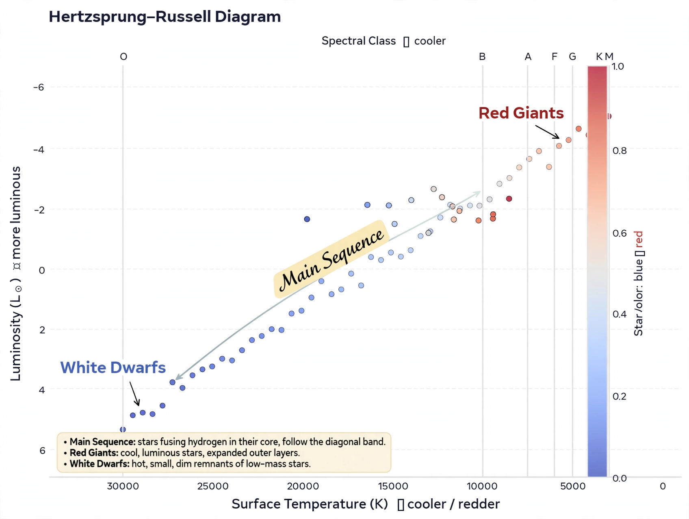

Stellar evolution

[Image: Hertzsprung–Russell diagram showing stellar populations from the main sequence to giants and white dwarfs]Stellar evolution is the process by which a star changes over the course of its lifetime. Depending on the mass of the star, its lifetime can range from a few million years for the most massive to trillions of years for the least massive. Stars are born in collapsing clouds of gas and dust, shine by nuclear fusion in their cores, and end — after shedding their outer layers — as white dwarfs, neutron stars or black holes.
The theory was assembled in the twentieth century from quantum mechanics (tunnelling makes fusion possible at stellar temperatures), nuclear physics (the proton–proton chain and CNO cycle of Hans Bethe, 1938–39) and observations organised by the Hertzsprung–Russell diagram.
Life of a Sun-like star
A star like the Sun spends ~10 billion years on the main sequence fusing hydrogen to helium. When core hydrogen is exhausted, the core contracts and heats, the outer layers expand into a red giant, helium ignites (for Sun-like masses, in a helium flash), and after burning helium to carbon and oxygen the star sheds its envelope as a planetary nebula, leaving a white dwarf of about 0.6 solar masses that cools indefinitely.
Massive stars and supernovae
Stars above ~8 solar masses proceed through successive burning stages — carbon, neon, oxygen, silicon — building an iron core that cannot release energy by fusion. When the core exceeds the Chandrasekhar limit it collapses in a fraction of a second; the rebound and neutrino burst drive a core-collapse supernova, leaving a neutron star or, for the most massive, a black hole. These explosions, and mergers of neutron stars, forge and disperse most elements heavier than iron, including gold and uranium (via the r-process).
Remnants and recycling
Stellar corpses are astrophysics' precision tools: white-dwarf explosions (Type Ia supernovae) serve as standardisable candles in cosmology; neutron stars appear as pulsars and merge in gravitational-wave events; black holes grow by accretion and mergers. The ejected material enriches the next generation of stars — the Sun's composition shows it formed from gas already processed by at least one earlier generation.